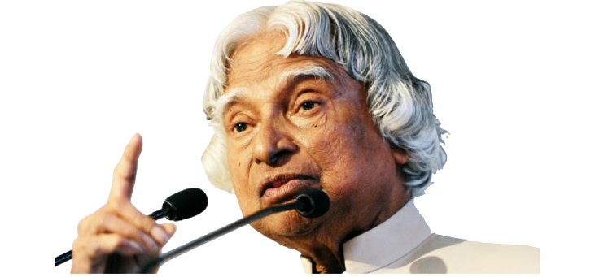

Great Indian scientiest and poliitcian who played a leading role in the developement of india's missile
and
nuclear weapons programs.
About the Legend
APJ Abdul Kalam was born on October 15, 1931, in Rameswaram, Tamil Nadu, India, in a humble family.
He came from a modest background and faced many challenges in his early life.
He graduated in physics from St. Joseph's College, Tiruchirappalli, and went on to study aerospace
engineering at the Madras Institute of Technology. His educational journey laid the foundation for
his future contributions to space and missile technology.
Kalam joined the Indian Space Research Organisation (ISRO) in 1963, where he made significant
contributions to the development of India's first satellite, Aryabhata.
He later joined the Defence Research and Development Organisation (DRDO) and played a pivotal role
in the development of India's ballistic missile technology, notably the Agni and Prithvi missiles.
Kalam was the Chief Scientific Adviser to the Prime Minister during the Pokhran-II nuclear tests in
1998, showcasing India's nuclear capabilities.
In 2002, he became the President of India. He was a highly popular and respected president, known
for his humility and accessible nature.
Dr. Kalam had a vision for India, which he called "Vision 2020". He aimed to transform India into a
developed nation by the year 2020, focusing on education, technology, and sustainable development.
He was an author and wrote several books, including "Wings of Fire," an autobiography, and "Ignited
Minds," where he shared his thoughts on igniting the potential of the youth.
After his term as President, Kalam continued to inspire and mentor students and youth. He believed
in the power of education to bring positive change.
APJ Abdul Kalam passed away on July 27, 2015, while delivering a lecture. He left behind a lasting
legacy as a scientist, statesman, and teacher. He is remembered as a role model and a source of
inspiration for millions of people in India and around the world.
For more info visit Wikipedia
[Developed By Chaitany Arora]